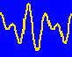

SEA-MAT: Matlab Tools for Oceanographic Analysis
 |
A collaborative effort to organize and distribute |
 |
A collaborative effort to organize Matlab tools for the Oceanographic Community
Time Series Tools
-
UTide: Expands and integrates the
t_tide(Pawlowicz et al 2002),r_t_tide(Leffler and Jay 2009), and “versatile” (Foreman et al 2009) approaches into a common framework. From Dan Codiga. -
jLab: A Matlab toolbox for big data analysis, signal processing, mapping, and oceanographic applications. From Jonathan Lilly.
-
RPSstuff: Tools for principal axis, low-pass filtering, z0tocd, and more. From Rich Signell.
-
Bobstuff: Tools for vector correlation and more. From Bob Beardsley.
-
rwt: Rice Wavelet Toolbox.
-
timeplt: Gregorian labeling of stacked time series plots, including vector stick plots. From Rich Signell.
Numerical Modeling Tools
- seagrid: Orthogonal curvilinear grid creator for Matlab, used to make grids for ROMS, COAWST, ECOM, etc.
Mapping Tools
- m_map: A free mapping package. From Rich Pawlowicz.
Hydrographic Tools
- teos-10: Thermodynamic Equation of Seawater (e.g. practical salinity, specific volume, potential density, etc).
- ez-krig: A gui-driven collection of routines to make Kriging of hydrographic and other spatial data a simple process, by Dr. Dezhang Chu.
- lim: Tools for water properties in lakes (or seawater < 4 ppt). From Rich Pawlowitz.
- dynmodes: DYNMODES calculates ocean dynamic vertical modes. From John Klinck.
- woce-tools: A collection of WOCE water property data utilities. From Paul Robbins.
- FloatAxis: Plot data with different units (eg. temperature, salinity and density versus depth) on the same axes having the x-axis for the parameters “floating” below. The number of parameters plotted is not limited. From Blair Greenan.
- tsg-gc: A tool for interactive quality control of sea surface temperature and salinity. From IRD.
Data Interface Tools
- nctoolbox: Provides read-only access to NetCDF, OPeNDAP, HDF5, GRIB, GRIB2, HDF4 and many (15+) other file formats and services using the same API. Understands and utilizes CF Conventions to facilitate reading coordinate data (lon, lat, depth, time).
Atmosphere
- air-sea: Compute surface wind stress and heat flux components from buoy and shipboard atmospheric and near-surface oceanographic time series measurements. By Rich Pawlowicz and Bob Beardlsley.
Other Tools
- moordyn:Tools for designing and testing dynamics of oceanographic moorings and towed bodies. From Richard Dewey.
- tide_ell: Tidal ellipse tools that convert between u and v amplitude and phase parameters and tidal ellipse parameters (major axis, ellipticity, inclination and phase). There is also a program to estimate vertical profiles of tidal ellipse parameters, given sea-elevation gradients. From Zhigang Xu.
- ternary: Shepard ternary plot (e.g. sand-silt-clay). From Bill Waite.
Related Web Sites
- Mathworks File Exchange: Repository of user-contributed toolboxes contributed for MATLAB.
- Sea-py: Python tools for oceanographic analysis.